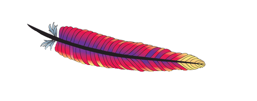
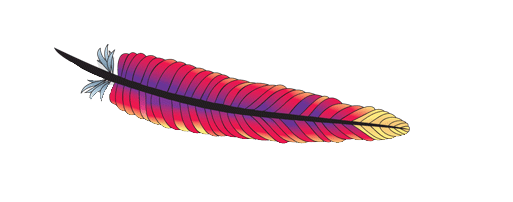

Software Engineer
I've designed and written software in the industry for over a decade using Java, delivering 10+ major projects.
I care about designing and building performance-oriented, stable, and scalable systems.
Recently, I've relocated to Japan and am finding my way back to my backend roots through Go.
Education
B.S. Computer Science
2009 – 2013FAST National University of Computer and Emerging Sciences, Karachi, Pakistan
Specialization: Software Engineering & Distributed Computing
Publication: VDrive: A cost-effective storage solution, using volunteer computing with emphasis on security/privacy, availability, and latency. 5th International Conference on Information and Communication Technologies, pp. 1-5. IEEE, 2013.
Career Highlights
Quollio Technologies
Software Engineer
Responsibilities: Development
Enhancing the backend of Quollio's Data Products using Go and AWS.
VinnCorp
Senior Engineering Manager
Responsibilities: System Design, Project & People Management, Development
Designed and deployed a scalable microservices architecture on Kubernetes, implemented a Kafka-based data pipeline for real-time processing, and improved software quality through TDD and code reviews. Supported developers in troubleshooting within AWS and Netlify environments.
Interactive Health Solutions
Staff Software Engineer
Responsibilities: Development, System Design, Technical Leadership, Mentorship
Led a team of 6-12 peers through the full SDLC for key projects, coordinated with stakeholders, and developed database synchronization modules that improved client efficiency by 30% in low-resource areas. Contributed to open-source projects like Bahmni and OpenMRS, facilitating client adoption of open-source EMRs. Ensured code compliance, conducted reviews, and led knowledge-sharing sessions.
Senior Software Engineer
Responsibilities: Development, Technical Leadership, Requirement Gathering
Developed a nation-wide project for Global Fund targeting Tuberculosis eradication in Pakistan. Designed a JSON decision parser that improved efficiency by 23% and reduced lead-time by 35%. Delivered performance-intensive code while meeting tight deadlines both independently and in team settings.
Software Engineer
Responsibilities: Development, Requirement Gathering
Designed and developed applications to meet project requirements. Supported deployed projects by resolving bugs, enhancing interfaces, optimizing performance, and compiling documentation.
Selected Projects
Bahmni – Open Source EMR
 



- Developed BahmniDB-Sync, a tool using Debezium and Kafka to push/pull data from master & to mitigate key conflicts. Enables use in low-bandwidth internet access regions.
- Developed Bahmni-Export, enabling data export of highly normalized Bahmni-db in report-ready format for the end-user.
- Provided implementation services to clients for Bahmni tailored to their requirements.
Brand Equity – Brand Monitoring & Analytical Tool


- Analyzed the code base for critical deficiencies and directed the execution of enhancement solutions.
- Led the integration of intent and sentiment modules for analyzing social media traffic.
- Assisted the on-site deployment of the project, identified and resolved the security and performance issues during the deployment in a financial firm.
Tajammul Customer & Tajammul Business – e-Commerce Solution for Businesses

- Defined product requirements and created high-level architectural specifications, in view of the feasibility and expansion of future project scope.
- Improved application architecture by introducing GraphQL and MongoDB to counter the uncertainties in project scope.
- Implemented CI/CD pipelines for mobile applications.
eIMCI – IRD

- Built a decision support system around World Health Organization's "Electronic Integrated Management of Childhood Illness" standard for health workers who deal with infants during remote and on-site screening.
TB e-Health Systems – IRD
- Deployed numerous systems for clients aimed at Tuberculosis eradication based on OpenMRS. Added data entry, diagnosis, contact tracing, and treatment features.
- Designed user configurable SMS-Notification System, intensive reporting, and dashboarding features.
- Pioneered medical-equipment integration (CAD4TB and GeneXpert Machines) for direct data imports.
- Developed a Laboratory Module for Tajikistan to deal with results and cumulative reports of Tuberculosis related medical tests.